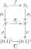
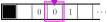
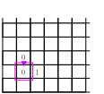

The Church-Turing Thesis
Last time, we saw Turing machines, our first honest-to-goodness full-scale mathematical model of computer hardware.
But why did we define it the way we did?
We had to make some choices about the design, right?
And what's more, we seemed to go beyond what's normally represented by actual physical hardware: our definition allowed us to go beyond \(0\)s and \(1\)s and write arbitrary symbols to our memory.
That's not good, right? Why can't we just use \(0\) and \(1\)?
Today, we are going to see that none of these choices matter in the end: no matter which "versions" of the Turing machine concept we choose, the same string transformers are computable.
In fact, it is thought that any physically implementable model of computation that is at least as expressive (in the precise sense we will define below) as the Turing machine model is actually equivalent to the basic Turing machine model.
This is what is known as the Church-Turing Thesis, which we will state more precisely at the end of today.
Today, we're going to make our way through a couple of different variations on the Turing machine theme, and show that they are all equivalent to the basic version of the Turing machine that we considered last time.
Binary Suffices
As our first example, let's argue that every computable function is representable by a Turing machine over the binary alphabet \(\{0, 1\}\).
(Binary Suffices)
Let \(f \colon S_1 \to S_2\) be any function between sets \(S_1\) and \(S_2\).
If \(f\) is Turing computable (in general, possibly with a Turing machine with many tape symbols), then there is a Turing machine \(\mathcal T = (Q, \{0,1\}, \delta)\) with a state \(x\) such that \(\mathcal T_x\) represents \(f\).
We are going to argue directly that for every Turing machine \(\mathcal T = (Q, A, \delta)\) with a state \(x\), there exists a Turing machine \(\mathcal T^\dagger = (Q^\dagger, \{0,1\}, \delta^\dagger)\) and a string representation \(\rho \colon A^* \to \{0,1\}^*\) that \((\rho, \mathcal T^\dagger_{x}, \rho)\) is a representation of \(\mathcal T_x\).
To then see that this produces a representation of \(f\), we just need to compose the two representations:

First of all, let \(|A| = n\).
Then there is a binary representation for each \(a \in A\) with \(\lfloor\log(n)\rfloor + 1\) many bits: specifically, if \(A = \{a_1, \dots, a_n\}\), then we can let \(\rho(a_i) = \mathsf{bin}(i)\).
This allows us to define \(\rho \colon A^* \to \{0,1\}^*\) by
\[
\rho(b_1b_2 \dots, b_m) = \rho(b_1) ~\rho(b_2) ~ \cdots ~\rho(b_m)
\]
For example, if \(A = \{a,b,c\}\), then \(\lfloor\log(n)\rfloor + 1 = 2\), and we have
\[
\rho(a) = 00
\qquad
\rho(b) = 01
\qquad
\rho(c) = 10
\]
so that
\[
\rho(bbac) = 01~01~00~10
\]
This takes care of the string representation.
Now we get to the hard part of defining \(\mathcal T^\dagger\).
Fix \(\ell = \log(n) + 1\).
The general idea is going to be to treat each block of \(\ell\) consecutive cells as one cell in the Turing machine \(\mathcal T\).
This means that every move command has to move \(\ell\) spaces instead of \(1\), and every reading of the tape has to be replaced with \(\ell\) reading steps.
Formally, the construction of \(Q^\dagger\) and \(\delta^\dagger\) happens in three stages:
-
In the first stage, we replace every move right/left with \(\ell\) of the same move.
That is, we replace \(\mathtt{move~right}\) with \(\mathtt{move~right}~\ell\), which we define to be
\[
\mathtt{move~right}~\ell
= \overbrace{\mathtt{move~right}{.}\mathtt{move~right} \dots \mathtt{move~right}}^{\ell \text{ times}}
\]
and similarly we replace every \(\mathtt{move~left}\) with \(\mathtt{move~left}~\ell\).
-
In the second stage, we replace every write with the binary representation of the written letter.
That is, if \(\rho(a) = b_1b_2\cdots b_\ell\), we replace \(\mathtt{write}~a\) with \(\mathtt{write}~b_1b_2\dots b_\ell\), which we define to be
\[\begin{aligned}
&\mathtt{write}~b_1b_2\dots b_\ell \\
&=
\mathtt{write}~b_1{.}\mathtt{move~right}{.}\mathtt{write}~b_2\dots
\mathtt{move~right}{.}\mathtt{write}~b_\ell{.}\mathtt{move~left}~(\ell-1)
\end{aligned}\]
-
In the last step, for each state \(y \in Q\) and bitstring \(b_1b_2\dots b_\ell\), we add a path
\[
y \xrightarrow{b_1 \mid \rhd}
y_{b_1} \xrightarrow{b_2 \mid \rhd}
\cdots
y_{b_1b_2\dots b_{\ell-1}} \xrightarrow{b_{\ell-1} \mid \rhd}
y_{b_1b_2\dots b_\ell}
\]
Then for each transition \(y \xrightarrow{a \mid p} z\), if \(\rho(a) = b_1\dots b_\ell\), then we replace that transition with the transition
\[
y_{b_1\dots b_\ell} \xrightarrow{\lhd^\ell{.}p} z
\]
Notice that the transition is taken regardless of what is under the tape head.
Above, we are using the shorthand \({\lhd^\ell} = \mathtt{move~left}~\ell\).
Let us now observe that \(\rho(\mathcal T_x(w)) = \mathcal T^\dagger_x(\rho(w))\) for any \(w \in A^*\) where \(\mathcal T_x(w)\) is well-defined.
Imagine running \(\mathcal T\) on a tape \((t, i)\) and \(\mathcal T^\dagger\) on a tape \((t', \ell i)\) at the same time, where for all \(k\),
\[
t'(\ell k + j) = b_{j-1} \qquad\qquad \text{(*)}
\]
where \(\rho(t(k)) = b_1 \dots b_\ell\).
Each transition \(y \xrightarrow{a \mid p} z\) corresponds to the \(\ell\) transitions
\[
y \xrightarrow{b_1 \mid \rhd}
y_{b_1} \xrightarrow{b_2 \mid \rhd}
\cdots
\xrightarrow{b_{\ell-1} \mid \rhd}
y_{b_1b_2\dots b_\ell}
\xrightarrow{\lhd^\ell{.}p'} z
\]
where \(p'\) is \(p\) but with the moves and writes adjusted as in stages 1 and 2 above.
We just need to argue that, up to representation, the effect of \(p\) and \(p'\) on \((t, i)\) and \((t', \ell i)\) is the same.
More precisely, we are going to prove that for any tape program \(p\), \((t, i).p\) and \((t', \ell i){.}p'\) also satisfy the property stated in (*).
To that end, we proceed by induction on \(p\).
-
Base Case 1.
If \(p = \mathtt{skip}\), then \((t, i){.}\mathtt{skip} = (t,i)\) and \((t', \ell i){.}\mathtt{skip} = (t',\ell i)\) and we are done.
-
Base Case 2.
If \(p = \mathtt{move~right}\) (equiv., \mathtt{left}), then \(p' = \mathtt{move~right}~\ell\), so that
\((t, i).p = (t, i+1)\) and
\((t', \ell i){.}p' = (t', \ell i + \ell) = (t', \ell (i + 1))\) and we are done.
-
Base Case 3.
If \(p = \mathtt{write}~a\), then \(p' = \mathtt{write}~b_1b_2\dots b_\ell\) where \(\rho(a) = b_1b_2\dots b_\ell\).
In that case,
\[
t'(\ell i + j) = b_{j-1}
\]
for each \(1 \le j \le \ell\), and the position of \((t', \ell i).\mathtt{write}~b_1\dots b_\ell\) is \(\ell i\), by design (see the definition of \(\mathtt{write}~b_1\dots b_\ell\) above).
-
Induction Step.
Finally, suppose that \(p = p_1{.}p_2\), and that the statement is true for \(p_1\) and \(p_2\).
Then \(p' = p_1'{.}p_2'\), where \(p_1'\) and \(p_2'\) were obtained from \(p_1\) and \(p_2\) via stages 1 and 2 above.
Using the induction hypothesis twice, we see that \((t, i){.}p_1\) and \((t', \ell i){.}p_1'\) satisfy (*), and therefore \((t, i){.}p_1{.}p_2\) and \((t', \ell i){.}p_1'{.}p_2'\) satisfy (*).
This finishes the proof.
(Simulating ABCs by Hand)
Consider the Turing machine over the alphabet \(A = \{a,b,c\}\) below.
|
x =
|
if blank goto y
if \(a\) write \(b\).move right.goto x
if \(b\) write \(c\).move right.goto x
if \(c\) write \(a\).move right.goto x
|
|
y =
|
if blank move left.halt
|
- Draw a state diagram of this Turing machine.
- Use the construction in the proof of the Binary Suffices theorem to simulate a Turing machine over the alphabet \(\{0,1\}\) that computes the same string transformer.
One-sided Tapes Suffice
We chose to define our Turing machines to have 2-sided tapes, but we could just as well have restricted ourselves to a one-sided tape.
Indeed, the two resulting models of comutation are equivalent!
(One-way Tape Machines)
A
one-way tape machine is a pair \((t,i)\) consisting of a function \(t \colon \mathbb N \to A \cup \{\_\}\) called the
tape and a nonnegative (!) integer \(i\) called the
position (of the tape head).
One-way tape machines also run \(\mathtt{Tape}\) programs, with one difference: the semantics of \(\mathtt{move~left}\) is different at position \(0\).
\[
(t, 0).\mathtt{move~left} = (t, 0)
\]
The notion of Turing machine for a one-way tape machine is exactly the same as for the two-way tape machine.
Also, the definition of \(\mathcal T_x \colon A^* \rightharpoonup A^*\) for a given Turing machine \(\mathcal T\) with a state \(x\) (run on one-way tape machine) is the same.
For one-sided tapes, we generally fix a particular symbol, \(\blacksquare \in A\), called the end of the tape (or \(\mathtt{end}\)), and immediately write this symbol to the beginning of the tape.
This leaves us with the following picture of one-sided tape machines:

It is also generally accepted practice to erase this symbol at the end of execution.
(One-way tapes suffice)
Let \(f \colon S_1 \to S_2\) be any function between sets \(S_1\) and \(S_2\).
If \(f\) is Turing computable (with a Turing machine run on a two-way tape), then there is a Turing machine \(\mathcal T\) with a state \(x\) such that \(\mathcal T_x\) represents \(f\) (where \(\mathcal T_x\) is evaluated on a one-way tape machine).
Again, this is a matter of simulating one type of tape machine with another.
We are going to simulate a two-way tape machine \((t, i)\) with a one-way tape machine by inteleaving the positive indexed cells of \(t\) and the negative indexed cells of \(t\).
In particular, if \(t\) is given by
\[
t = \qquad [~\dots \mid -3 \mid -2 \mid -1 \mid 0 \mid 1 \mid 2 \mid 3 \mid \cdots~]
\]
then we are going to squeeze this into the tape
\[
t' = \qquad [~0 \mid -1 \mid 1 \mid -2 \mid 2 \mid -3 \mid 3 \mid \cdots~]
\]
Formally, this means that running our Turing machine needs to maintain the properties
\[\begin{aligned}
t'(2j) &= t(j) \\
t'(2j + 1) &= t(-j-1) \\
i' &= 2i &\text{if \(i \ge 0\)} \\
i' &= 2|i| - 1 &\text{if \(i < 0\)}
\end{aligned}
\qquad \text{(*)}
\]
where \(j\) ranges over all \(j \in \mathbb N\).
Then, at the end of runtime, we are going to "shift everything over" until the string we are trying to represent is represented in-order on the one-way tape.
One Tape Machine Suffices
Here is another idea: what if we wanted to have two tape machines going instead of one?
(Multi-tape Machines)
Given a natural number \(n \in \mathbb N\), an (two-way) \(n\)-tape machine is a tuple of \(n\) tape machines \(\langle (t_1, i_1), \dots, (t_n, i_n)\rangle\).
The set \(\mathtt{Tape}_n\) of \(n\)-tape programs is derived from the grammar
\[
E \to
\mathtt{skip}
\mid \mathtt{move}~k~\mathtt{left}
\mid \mathtt{move}~k~\mathtt{right}
\mid \mathtt{write}~\sigma~\mathtt{to}~k
\mid E{.}E
\]
where \(1 \le k \le n\) and \(\sigma \in A\).
The semantics of \(n\)-tape programs is as follows: Given an \(n\)-tape machine \(\langle (t_1, i_1), \dots, (t_n, i_n)\rangle\), we define
\[\begin{aligned}
\langle (t_1, i_1), \dots, (t_n, i_n)\rangle.\mathtt{skip}
&= \langle (t_1, i_1), \dots, (t_n, i_n)\rangle \\
\langle (t_1, i_1), \dots, (t_n, i_n)\rangle.\mathtt{write}~\sigma~\mathtt{to}~k
&= \langle (t_1, i_1), \dots, (t_k,i_k).\mathtt{write}~\sigma, \dots, (t_n, i_n)\rangle \\
\langle (t_1, i_1), \dots, (t_n, i_n)\rangle.\mathtt{move}~k~\mathtt{left}
&= \langle (t_1, i_1), \dots, (t_k, i_k - 1), \dots, (t_n, i_n)\rangle \\
\langle (t_1, i_1), \dots, (t_n, i_n)\rangle.\mathtt{move}~k~\mathtt{right}
&= \langle (t_1, i_1), \dots, (t_k, i_k + 1), \dots, (t_n, i_n)\rangle
\end{aligned}\]
Again, the corresponding notion of Turing machine is the same, with the one exception that the transition relation of an \(n\)-tape Turing machine \(\mathcal T = (Q, A, \delta)\) is now
\[
\delta \subseteq Q \times (A \cup \{\_\}) \times \mathtt{Tape}_n \times Q
\]
Lastly, we take the string transformer \(\mathcal T_x \colon A^* \rightharpoonup A^*\) defined by the state \(x\) of the \(n\)-tape Turing machine \(\mathcal T\) to be determined by the result of reading the first (index \(1\)) tape after a halting run.
(One Tapes Suffices)
Let \(f \colon S_1 \to S_2\) be any function between sets \(S_1\) and \(S_2\).
If \(f\) is Turing computable on an \(n\)-tape Turing machine, then there is a single tape Turing machine \(\mathcal T\) with a state \(x\) such that \(\mathcal T_x\) represents \(f\).
(All the tapes!)
In the proof above, we only showed that \(2\)-tape Turing machines could be simulated with ordinary Turing machines.
How might we prove that an arbitrary \(n\)-tape Turing machine can be simulated by an ordinary Turing machine?
(Computing in Flatland)
A (corner-)sheet machine \((s, (i, j))\) consists of a function \(s \colon \mathbb N\times \mathbb N \to \{\_\} \cup A\) called a (corner-)sheet, and a pair of coordinates \((i,j) \in \mathbb N \times \mathbb N\) called the position (of the sheet head).

Sheet machine programs are generated by the grammar
\[
E \to \mathtt{skip}
\mid \mathtt{move~left}
\mid \mathtt{move~right}
\mid \mathtt{move~up}
\mid \mathtt{move~down}
\mid \mathtt{write}~\sigma
\]
Show that every string transformer that can be represented by a Turing machine that operates on sheets is Turing computable in the ordinary sense.
The Church-Turing Thesis
There are dozens more variations on the Turing machine theme that we could discuss here.
You might even cover one in your project.
But the point is, they all seem to be beat by the vanilla Turing machine concept.
After all of that, you might be left wondering: can we beat the single-tape Turing machine?.
This is a good question as it is, but it also could use a bit more specificity:
Is there an algorithm that is, ignoring finite differences, implementable on a physical device and cannot be represented on a Turing machine?
This is the central scientific question of theoretical computer science.
The word scientific is used here in a very literal sense: it is not a mathematical question, because there is no mathematical definition of "ignoring finite differences, implementable on a physical device"---this is a question of practical measure.
The Church-Turing thesis is, and it is still widely believed to be correct, answers the question with a simple, "no."
The Church-Turing Thesis: Every algorithm that is implementable on a physical device can be represented on a Turing machine.
Indeed, every reasonable model of computation that has been discovered in the past century that is at least as powerful as the Turing machine has been proven to be equivalent to the Turing machine, including \(\lambda\)-terms.
(Church-Turing)
Let \(f \colon S_1 \to S_2\) be any function between sets \(S_1, S_2\).
Then \(f\) is \(\lambda\)-representable if and only if it is Turing computable.